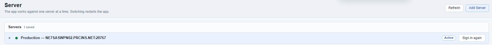

Server Connection
Check which server Arco is using
Confirm the active server, renew sign-in when needed, and switch only after saving your open work.
Inspect the Current Connection
- On Home, choose Server Connections to open the Server tab.
- Find the server marked as in use and check its name and address.
- Choose Refresh to update the displayed server information.
- If Arco asks you to sign in again, choose Sign in again on the active server row and read the result.

Enter Connection Details
- Open Settings → Server Connection.
- Enter the administrator-provided Root Path, or choose it with Browse....
- Enter the corresponding Server Address, then choose Save.
- Read any sign-in or connection message before continuing. Use Open Server Tab to inspect the configured server.
Use the address supplied for your environment. The project name Monthly_Insurance_Dataset is not a server address or root folder.
Switch to Another Configured Server
- Save any open dataset, method, workflow, or editor changes.
- On the Server tab, choose the other server's Switch action.
- Check the destination in the confirmation, then choose Switch and Restart.
- After the restart, confirm the active server and reopen the intended project.
Add Server lets you register another administrator-provided Folder, Name, and Address. A window marked Set at launch has its server fixed for that session, so switching and adding are unavailable.
Use Status to Diagnose a Problem
The Components panel shows whether the active server's services are reporting. If the server cannot be reached, preserve the displayed error and ask the server administrator to check the connection and service state.
Use Help → User Guide to open the guide from the active server. If Arco asks for a server address first, return to Settings → Server Connection.
Once connected, continue with the Project Page walkthrough.